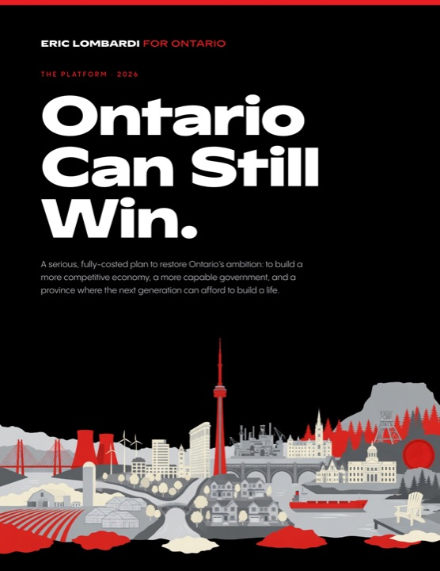
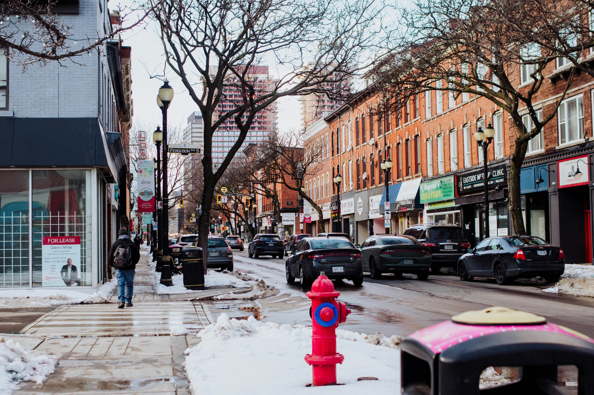
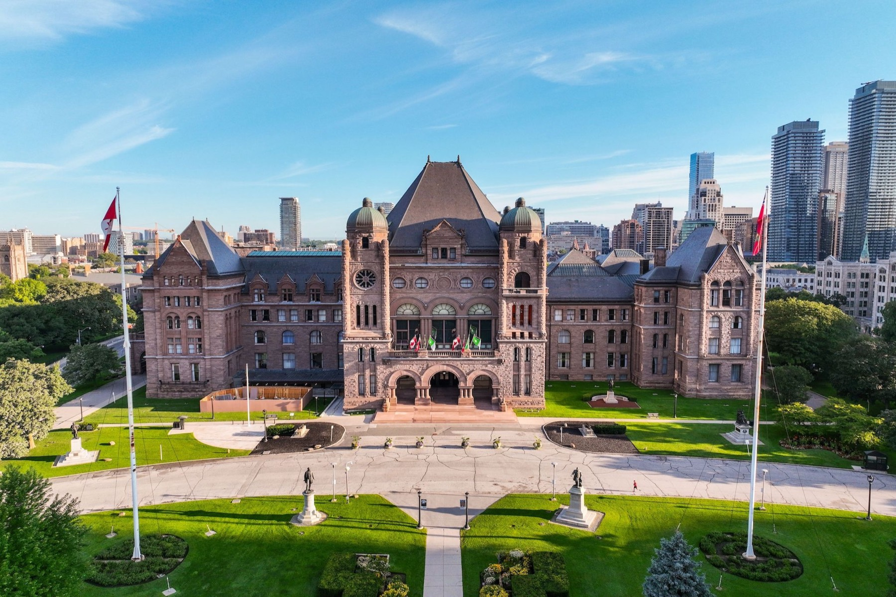
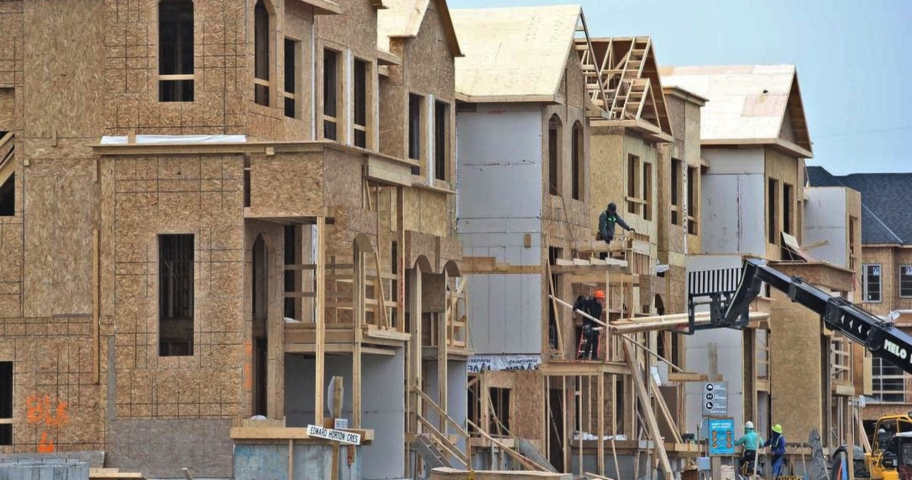
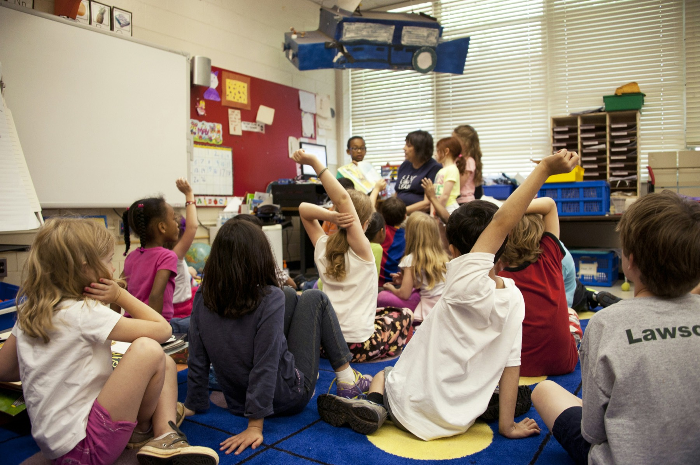
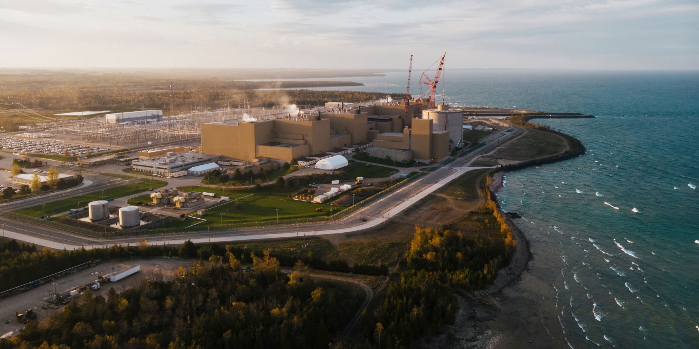
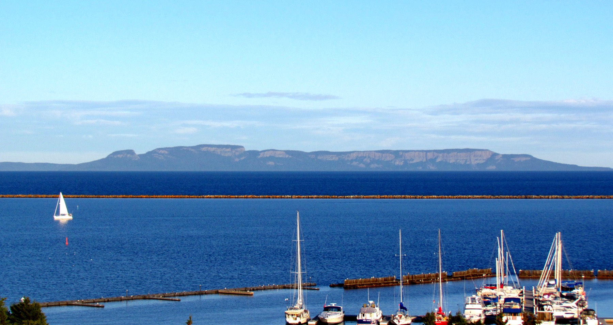
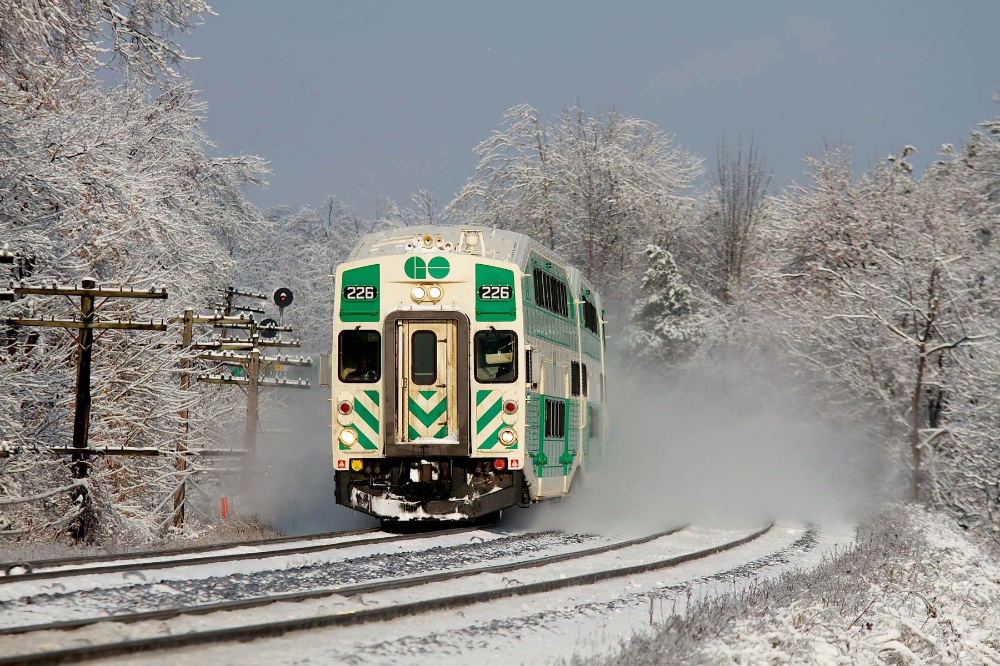
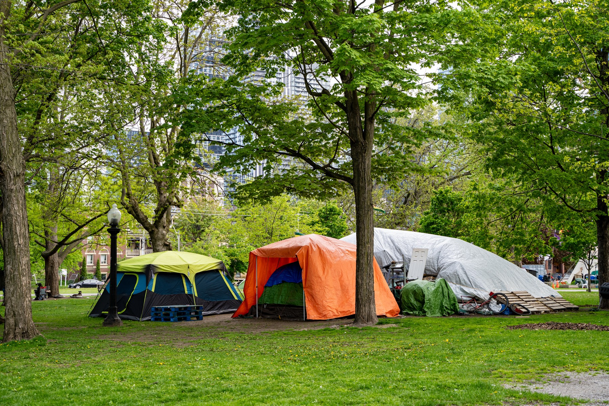

A serious, fully-costed plan to restore Ontario’s ambition: to build a more competitive economy, a more capable government, and a province where the next generation can afford to build a life.

The complete platform as a designed document — every chapter, every commitment, every financial assumption.
This platform is my love letter to the future of Ontario.
To the province we can still build, to the people who still believe in it, and to the next generation that deserves more than managed decline.
I am running because I believe Ontario can still be the best place in the world to build a life. A place where young people can afford a home, start a family, and build a career. A place where seniors can age with dignity, where public services work, where classrooms are serious, where healthcare is there when you need it, and where government once again knows how to build.
I know I am not the candidate who followed every traditional step. I know my age and lack of conventional political experience will make some people skeptical. Fair enough. Politics is full of people who waited their turn. It is not full of people willing to tell the truth about why the province stopped working for so many of us.
The truth is simple. Ontario's decline was not inevitable. Housing did not become unaffordable by accident. Healthcare did not become inaccessible by accident. Our roads, transit, schools, courts, energy system, and public services did not become slower, weaker, and more expensive because of some law of nature. These were choices. Sometimes active choices. More often, choices made by delay, cowardice, drift, and a political culture that confused managing problems with solving them.
So we can choose differently.
The traditional political wisdom is that policy does not matter. That people vote on emotion. That details are dangerous. That the safest thing a party can do is say as little as possible and hope the other side becomes less popular first. I reject that. Ideas matter. Competence matters. Institutions matter. The next generation is not looking for another performance of empathy from leaders who presided over failure. They are looking for a government that can make life work again.
That is what this platform is about. It is for Ontario Liberals who want our party to become liberal again. Confident in people, serious about growth, committed to equal opportunity, respectful of merit and individual agency, and unapologetic about the rule of law. But it is not only for Liberals. It is for Ontarians across the political spectrum who are tired of a province with every advantage acting like decline is the best we can do.
Ontario has the people, land, universities, colleges, farms, forests, mines, factories, hospitals, research institutes, nuclear fleet, cities, towns, talent, and ambition to win. We have immigrants who came here to build and young people still trying to believe they should stay. What we have lacked is not potential. It is seriousness.
This platform offers a different direction. Build the homes Ontario needs. Make education an on-ramp into a real career and a real life. Attach every Ontarian to care. Restore standards in schools. Make Ontario the cheap-power capital of North America. Connect our regions with rail, bus, roads, and transit that actually work. Rebuild Northern and rural services. Restore order and fairness in justice and immigration. Reform government so it spends smarter, taxes better, procures faster, and rewards results.
No platform is perfect, there will be mistakes, of course, and things in here you disagree with. What matters is that the choices are on the table at all. Most politicians avoid showing you the trade-offs, because trade-offs are where the hard decisions live. This platform does the opposite. It weighs each promise against its costs and against everything else in it, so the pieces fit together and add up, and it asks you to judge the whole picture rather than a handful of slogans. The point is to raise the level of the debate, and to give Liberals and Ontarians a real option. Much of it will be refined, expanded into deeper plans, and changed by what we hear through this campaign.
These are my own ideas, informed by my experience and by the many Ontarians who have shared their views with me, and I offer them as a beginning rather than a conclusion. A platform worthy of a general election must also be shaped by our members, and nothing here is meant to settle that debate in advance. My hope is that it draws more people into the party to test and improve these ideas, so that together we arrive at the strongest ones for Ontario.
While this plan is detailed, the promise I am making is not complicated. If you work hard, you should be able to build a life. If you need care, the system should be there. If you want to start a business, raise a family, buy a home, teach a class, serve a patient, grow food, build housing, drive a truck, or keep a Main Street alive, your government should make it easier to succeed, not harder.
Ontario can still be the province where young people plant roots instead of making exit plans. Where seniors age with dignity instead of fear. Where workers see rising wages, not just rising costs. Where builders build, doctors practise, teachers teach, entrepreneurs scale, and families once again believe the future is bigger than the past.
I am not asking Ontarians to settle for a slightly better version of managed decline. I am asking us to win again.
Ontario can still win. But only if we decide to Own The Future.








Every chapter is costed against the Ontario Budget 2026 baseline, and every assumption is published. The growth agenda and the reform dividends fund the rest: across all thirteen chapters the platform nets out between ($0.8B) and +$2.5B — no new taxes, no cuts to the services people rely on.
| Chapter | Lower | Upper |
|---|---|---|
| Platform total — net budgetary impact | ($0.8B) | +$2.5B |
| 01 · A Hopeful Future For Young Ontarians | ($3.5B) | ($4.6B) |
| 02 · No Seniors Left Behind | ($2.1B) | ($4.3B) |
| 03 · An Opportunity Economy | +$12.4B | +$16.9B |
| 04 · Restore Faith That Democracy Can Deliver | ($45M) | ($80M) |
| 05 · Build Homes, Build Communities, Build Futures | ($1.4B) | ($2.6B) |
| 06 · Healthcare You Can Depend On | ($3.8B) | ($4.8B) |
| 07 · Get Serious About Education | ($2.3B) | ($3.5B) |
| 08 · Clean Energy For A Prosperous Future | +$220M | +$50M |
| 09 · Northern and Rural Communities Deserve Better | ($330M) | ($450M) |
| 10 · Build The Future Of Transportation | ($3.1B) | ($3.7B) |
| 11 · A Welfare System That Lifts People Up | ($600M) | ($950M) |
| 12 · Real Justice and Orderly Immigration | +$775M | +$950M |
| 13 · Reform Dividends | +$3.0B | +$9.6B |
Negative figures (in parentheses) are net new provincial spending; positive figures are net savings or revenue. Detailed derivations appear on each chapter page under “Financial assumptions.”
Alto should be just the beginning. Explore the Southern Ontario high-speed rail network we could actually build — lines, stops, and travel times.
The campaign, riding by riding — explore what the plan means where you live, across all of Ontario.
Every dollar goes to work — with up to 75% back in tax credits.
DonateJoin the movement for a better Ontario. Sign up for updates and be part of the change.
team@ericlombardi.ca